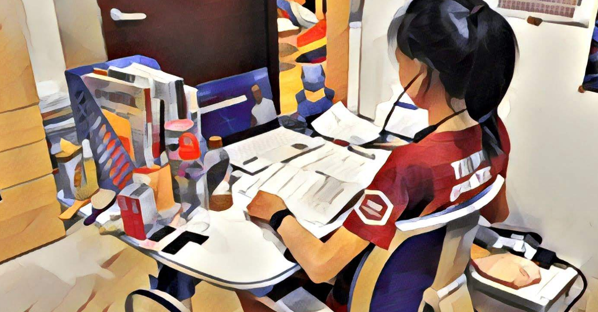

臺灣的教養出版，有個熱門主題，是分享北歐的自由尊重的教育方式。
我一直在思考，為什麼差異會這麼大？我們也知道，直接移植會有問題，但到底那個問題出在哪裡？
我想了很久，昨天讀這本丹麥 SUPER 教師訪談錄，又有了一些新的體會。
📚丹麥SUPER老師這樣教！
曾經，我認為，或許西北歐就是幸運，我們亞洲這種後發式先進國家，就只能更勤奮更努力，因為地緣政治以及歷史緣故，有些國家就可以爽爽過，但有些國家就只能加倍努力，睡眠不足也要努力。
但我後來發現，除了地緣政治之外，事實上還有些文化上的根本差異。
西北歐更尊重人，更尊重孩子。而他們對世界的想像，也跟我們不一樣。這部分是我們作家長可以做到的。
例如截圖的這段，丹麥得獎老師，很尊重孩子的生理狀態。

在臺灣，青少年下午就沒力，會被認為是體力不好、太少運動、沒好好吃東西、是不是晚上滑手機打電動。
但我們家的經驗並不是這樣，而是小孩在六年級到國二這階段，因人而異，會有一段時間特別需要睡眠，他們就是很容易累，晚餐後可以直接睡到早上。你如果放任他們睡，可以每天都睡 10 個小時。
我自己觀察，這不是小孩懶惰，這就是 biology 生物學。而且孩子過了這一陣子，睡得不多也可以自己起床，而且你再怎麼讓他睡，也不會睡那麼久。
青少年，就像是寶可夢三態變化的中間態。綠毛蟲進化變成鐵甲蛹，根本沒什麼戰鬥力，就為了改變型態，準備變成巴大蝶。
人類的還不錯，青少年不用變成蛹縮起來，還可以正常生活。如果他們的能量用在長大、器官轉變、荷爾蒙調整，會累一點，也是很合理的。
但在臺灣傳承的中華文化教育中，這就像孔子罵的那個學生宰予，白天想睡，就是「朽木不可雕也，糞土之牆不可汙也。」
似乎我們的文化傾向於認為，意志力可以克服疲倦，一個人想睡，都是他自己的問題：你為什麼不撐住呢？你為什麼不喝咖啡呢？你為什麼不去洗洗臉呢？
而不是把這個視作生理現象，尊重生理需求，去改變我們對孩子的要求。
同樣的事情在工作上也是，很多到國外進修的人，都會意外英美對於人如果生病想請假，非常容易，口頭講一聲就可以，甚至不用任何證明。
他們會認為，你都覺得自己狀況不好了，硬要你來上班也太過分。這也是尊重生理、尊重個人。因為被信任，在自己可以上班時，也自然會全力以赴。
當我們尊重孩子的生理狀態，信任他，他也才真正能夠聆聽到自己身體與心裡的聲音，自己做決定。
而不是用別人的眼光、別人的規範，來定義成長中的自己，那個他自己也不確定什麼才是對的自己。
因為觀察到孩子有一兩年會頗為嗜睡，我們從外觀看不出來，只有他們自己能知道。我現在都只抓大方向，孩子自己決定什麼時候睡、什麼時候寫功課、什麼時候練機器人。
你覺得這幾天睡覺比功課重要，那就先把自己充電充好，你想做的時候，再用你自己喜歡的步調做就好。
我們做爸媽的，在仍能一起相處的這幾年，會協助你成為自己的主人。
相關連結
《丹麥SUPER老師這樣教！》
由此連結購買，你沒損失，4% 購書介紹費捐贈公益計畫。